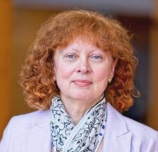
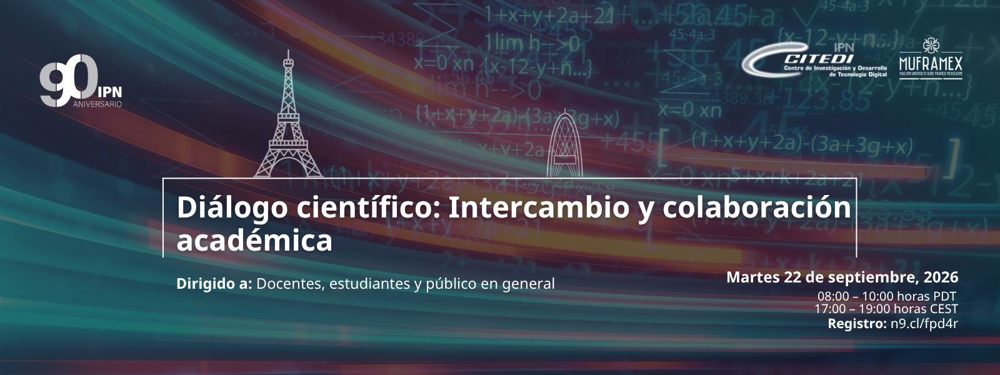
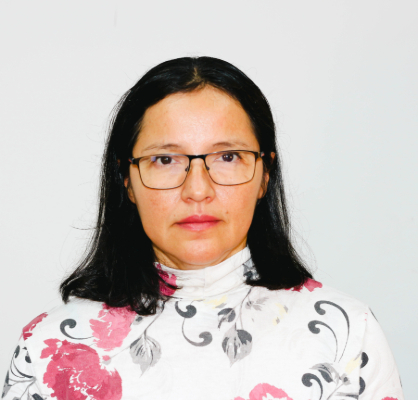
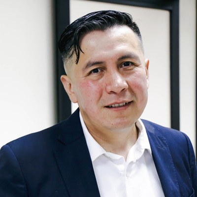
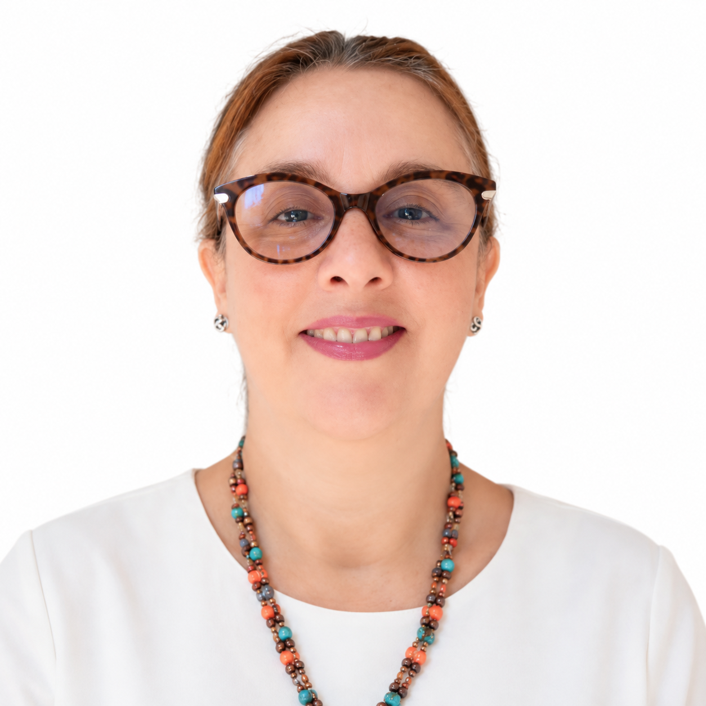
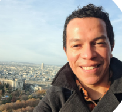
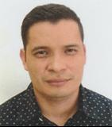
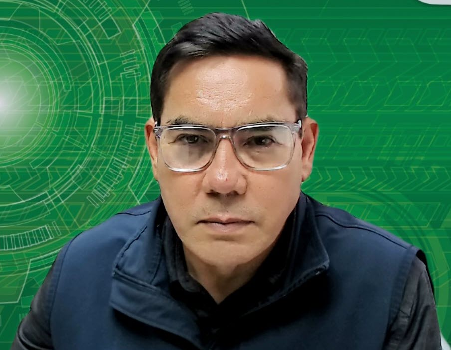

Jenny Benois-Pineau
Université Bordeaux, LABRI UMR 5800

OBJETIVOS DEL PROGRAMA
Fortalecer la colaboración académica entre investigadores de CITEDI e investigadores de instituciones francesas, promoviendo el diálogo, el intercambio científico y en el mejor de los casos, el desarrollo de proyectos conjuntos en áreas de interés común.
AGENDA
Apertura
Panel
Moderador: Jorge García Flores, Director de MUFRAMEX.
Plática
USPN Institut Galilée, L2TI Lab
Plática
Carlos Javier González Santamaria · IMT Atlantique
Plática
Sergio Jesús González Ambriz y Ciro Andrés Martínez García Moreno · CITEDI-IPN
Cierre
VOCES DEL DIÁLOGO

Université Bordeaux, LABRI UMR 5800

CITEDI-IPN
Sorbonne University, CNRS, LIP6

CITEDI-IPN

USPN Institut Galilée, L2TI Lab

USPN Institut Galilée, L2TI Lab

IMT Atlantique
CITEDI-IPN

CITEDI-IPN
PARTICIPA
La participación está abierta a docentes, estudiantes y público en general.
MEMORIA DEL EVENTO
Al finalizar el evento, la grabación se publicará en el canal institucional de YouTube. Este espacio está preparado para integrarla.